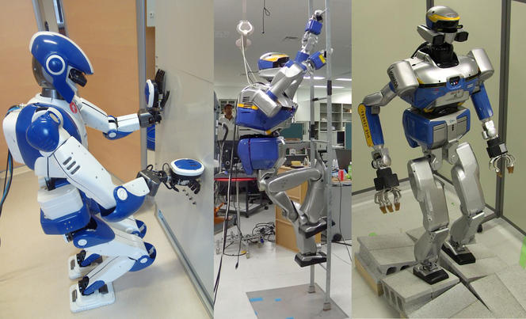

Les différents types de robots
Les différents types de robots
Les différents types de robots
Les différents types de robots
Pour réitérer nos précédents propos, les robots peuvent avoir différents aspects et tailles, en fonction de leur tâche et de leur environnement. Par exemple, le « RoboBee » fait 0,2 mm, tandis que le « Vindskip », un navire de transport robotique, mesure 200 mètres. Autrement dit, il n’y a aucune limite à l’apparence que peut avoir un robot. Néanmoins, nous pouvons distinguer certains types, en fonction de leur programmation.
Il s’agit d’un dispositif semi-autonome qui utilise un réseau sans fil pour permettre à un humain de le contrôler à distance. Généralement, ce type de robot est utilisé dans les conditions extrêmes (géographiques, climatiques, circonstances, etc.). C’est par exemple le cas des sous-marins téléguidés, utilisés pour la maintenance des navires ou encore les drones qui servent à détecter les mines sur un champ de bataille.
Une machine robotique pré-programmée se déploie dans un espace contrôlé où elle effectue des tâches assez simples. Les bras mécanisés qui servent aux usines de fabrications sont des prototypes de robots pré-programmés. Ils ont des attributions telles que le vissage ou la soudure, le principe étant de le faire plus efficacement et plus rapidement qu’un humain.
Cela va de soi, les robots autonomes fonctionnent sans l’intervention d’un opérateur humain. Ils sont conçus pour effectuer des tâches dans un environnement qui ne requiert pas de surveillance. Leur autonomie repose sur les capteurs qui leur permettent de percevoir ce tout qui les entoure. Dans la plupart des cas, un ordinateur traite les données collectées au niveau des capteurs pour les aider à prendre des décisions sur leur agissement. L’aspirateur robot Roomba, qui se déplace librement dans la maison, en est le parfait exemple.
Un robot autonome peut être ou non intelligent. Nous parlons ici d’une intelligence artificielle, programmée par un ordinateur. La différence entre un robot simplement autonome et un robot doté d’une IA se situe au niveau des tâches qu’il peut ou non accomplir.
Les capacités d’une machine automatique peuvent connaître certaines limites.
L’IA peut alors intervenir pour lui donner plus d’aptitudes et de bon sens.
Les humanoïdes sont des robots qui ont l’apparence d’un humain, ou d’une partie de son corps. Et cette ressemblance ne concerne pas uniquement le physique. En effet, ils sont souvent programmés pour des activités humaines comme marcher, transporter des objets, etc. Parmi les humanoïdes les plus populaires figurent Atlas de Boston Dynamics et Sophia de Hanson Robotics.

Des robots humanoïdes devraient à l'avenir travailler sur les lignes d’assemblages des avions de ligne grâce à un programme de recherche franco-japonais lancé avec le groupe Airbus. Ils permettront de décharger les opérateurs humains des tâches les plus laborieuses ou dangereuses.
Il s’agit des produits de la science robotique qui se déploient dans le concept de l’homme augmenté. En d’autres termes, ce sont des robots qui servent à améliorer ou à remplacer certaines capacités d’une personne. Cette branche de la robotique pourrait très bien donner vie à la science fiction, quoique, actuellement, elle travaille sur les dispositifs tels que les prothèses.
 ACCUEIL
ACCUEIL